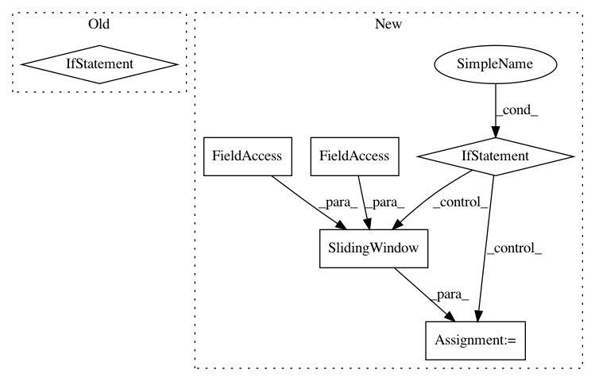

5c1eda942eeaef4c0278dd8aa2e931e6d77ea888,pyannote/audio/labeling/extraction.py,SequenceLabeling,__init__,#SequenceLabeling#Any#Any#Any#Any#Any#Any#Any#Any#,70
Before Change
else:
self.frame_info_ = self.feature_extraction.sliding_window
if hasattr(self.model, "frame_crop_"):
self.frame_crop_ = self.model.frame_crop_
else:
self.frame_crop_ = "center"
self.duration = duration
self.min_duration = min_duration
generator = SlidingSegments(duration=duration, step=step,
After Change
self.resolution_ = self.feature_extraction.sliding_window
// model returns one vector per input window
if self.resolution_ == RESOLUTION_CHUNK:
self.resolution_ = SlidingWindow(duration=self.duration,
step=self.step)
self.return_intermediate = return_intermediate
super(SequenceLabeling, self).__init__(
generator, {"@": (self._process, self.forward)},
In pattern: SUPERPATTERN
Frequency: 3
Non-data size: 6
Instances
Project Name: pyannote/pyannote-audio
Commit Name: 5c1eda942eeaef4c0278dd8aa2e931e6d77ea888
Time: 2019-11-12
Author: bredin@limsi.fr
File Name: pyannote/audio/labeling/extraction.py
Class Name: SequenceLabeling
Method Name: __init__
Project Name: pyannote/pyannote-audio
Commit Name: 98e7c298a4b9f35e6ac7e993e241a5f009e51e6b
Time: 2020-02-17
Author: bredin@limsi.fr
File Name: pyannote/audio/labeling/tasks/base.py
Class Name: LabelingTaskGenerator
Method Name: __init__
Project Name: kenshohara/3D-ResNets-PyTorch
Commit Name: 002c64b2ef562528043a1fd9961607415e1170aa
Time: 2018-11-21
Author: kensho.hara@aist.go.jp
File Name: main.py
Class Name:
Method Name: get_test_utils